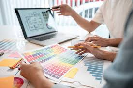
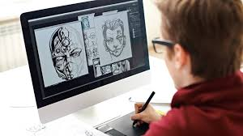

¿Que es el diseño grafico?
El diseño grafico es una diciplina creativa que combina arte, comunicacion y tecnologia para crear soluciones visuales que transmitan mensajes de manera efectiva y estetica.
¿Que son las herramientas de diseño grafico?
Las herramientas de diseño grafico son programas y aplicaciones informaticas que permiten a los diseñadores crear, editar y manipular imagenes,ilustraciones y composiciones visuales. Estas herramientas son fundamentales para plasmar ideas creativas y producir material grafico de alta calidad, abarcando desde la edicion de fotos hasta la creacion de diseños para paginas web y materiales impresos.
Estas herramientas son esenciales para cualquier personas que quiera crear diseños efectivos y atractivos en diferentes areas, desde publicicdad branding y comunicacion visual.
Herramientas de diseño grafico que usamos en clase
Este año usamos varias aplicaciones de diseño grafico como:
Inkscape que es una aplicacion de diseño grafico de codigo abierto y gratuita. Esta aplicacion la utilizamos para hacer varios trabajos como para crear caratulas para alguna materia, vectorizar imagenes, crear juegos, hacer un logo para un emprendimiento o empresa y hacer folletos.
Otra de las aplicaciones que usamos fue visual studio code, esta aplicacion la utilizamos para crear diferentes paginas web.con esta aplicacion hicimos varias paginas con diferentes temas como inteligencia artificial, recetas y sobre lo que hicimos este año en diferentes materias.Estos trabajos nos ayudo mucho ya que varios estudiantes empezaron emprendimientos y esto ayuda a tener mas opciones para promocionar, vender de una manera mas facil y que se vean los productos de una manera mas llamativa.
volver a la pagina principal